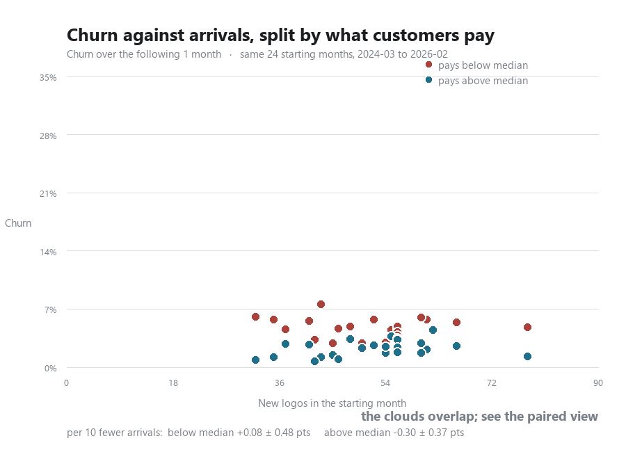
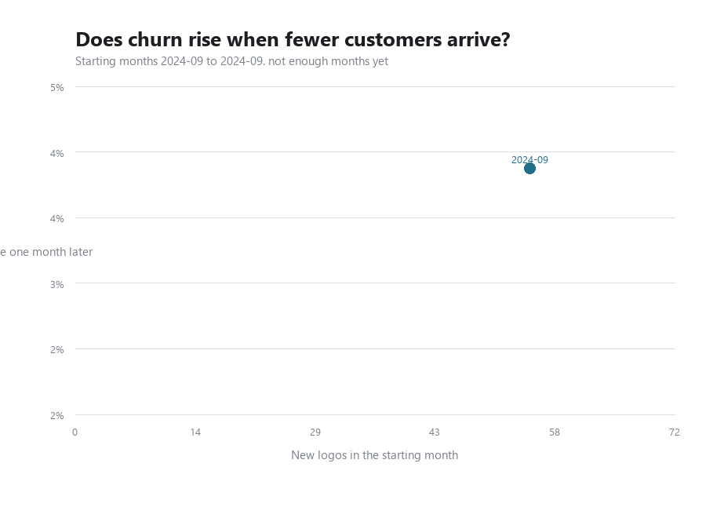

Loading.
Reading the workbook data.
The first rules out the explanation everyone reaches for. The second says what the intakes actually did.
1 A thin month of arrivals does not cost you customers. Each point is one starting month: how many signed up, against the share of the book gone by the end of the window. Give churn one month to happen or six and the cloud lifts without tilting. At every horizon the correlation fails to clear zero, and the sign flips across the range rather than holding a direction, which is what noise looks like.
The fear that a quiet pipeline distracts the team into losing accounts is not supported at any point in two years. Acquisition and retention can be run as separate problems by separate owners, and neither one is hostage to the other. It also means the churn we are about to look at has to be explained by something other than how many customers came in that month.
One caveat, because it will come up and it cuts against us. The intake was not thin for most of this period, but the latest month is: new customers ran 43, 51, 40 and 29 over the last four full months against an average of 51 across the whole window. August is the thinnest month in nearly three years. That is worth watching on its own terms — it is just not what is driving the churn, which is the point of the chart above.
2 What changed is the first month, not the whole curve. Line every intake up against its own signup month. At month 6 the three years run 75.7%, 79.9% and 70.6% — 2026 is the worst, but it sits five points under 2024 rather than in a different world, and 2024 itself is four points under 2025. Month 6 is a muddle. The first month is not: 2026 loses 9.6% of an intake before the second invoice where 2024 lost 1.4% and 2025 lost 2.6%. That is not a drift, it is a step change, and it is the one part of this chart that is unambiguous.
A cohort that loses a tenth of itself before the second invoice is a problem with what we sold, or who we sold it to, rather than with how we looked after them nine months later. Those are different teams and different fixes, and the month the loss happens is what tells you which.
Two things stop this being stronger than it is. The 2026 line at month 6 rests on two cohorts and 85 customers, because nothing later has had six months to run — treat the right hand end as provisional and the first month as the finding. And read the count carefully: it cannot tell a customer who is paying from one who is merely still listed, and going into 2026 both the cancellation rule and the coupons added to the second group. The money version of this same chart is one tab away and reads worse again.
One line per age, against the month a cohort started. A cohort joins a line only once that age is behind it, so the lines end at different points and the right hand end of each is the newest cohort old enough to be judged. Retention here is survival, so once a customer has gone they stay gone. That orders the three points within any one cohort, month 3 at or above month 6 and month 6 at or above month 12, but it says nothing about the direction of a line: each line runs across cohorts rather than through one, so it rises wherever a later intake held better than an earlier one. Each cohort is measured against its own signup month.
A cohort curve follows one intake as it decays. These follow the whole base from a standing start: take everyone active in a month, and see how many are still there some months later. That is the number that moves revenue, and it can be asked of every month rather than only of new arrivals.
Some questions above have a dimension that will not fit in one frame. These hold both axes fixed and move only the thing being varied, so a point that shifts has really shifted rather than being rescaled. The first is stepped with a slider, so you can stop on any setting; the rest play through on their own and are redrawn from the data on every push, so they cannot fall behind the page.
Every line the pipeline counts as acquisition, by month, with the logo count and the cost per logo underneath it. Partnerships is the one split line that reaches this total, at 100%; Customer Success is settled at 0% and Technical Account Manager sits in cost of sales, so neither appears.

The two clouds overlap, and the paired test still separates them. Splitting each month at its own median puts higher payers below lower payers at every horizon, but the scatter hides it: almost all the spread you can see is between months rather than between the two halves within a month. The figures under the chart condition on the month, which is what the comparison actually rests on.
Each month is split at its own median subscription rather than at a fixed price, so a month is compared against itself and the steady rise in price across the window does not leak into the split. Same starting months and same axes as the chart above, so the only thing changing between the two is the split.

Checking whether the recent months sit apart. This is also the chart that shows how the scatter is built: one frame per starting month, each point being that month's arrivals against the share of its customers gone one month later. Chart 22 draws every month at once, so nothing on it says which came first and a relationship that had changed would be invisible. Adding them one at a time shows that none of the last two years' starting months sits apart from the rest.
One frame per starting month, each new point marked and the ones before it faded by age. Churn is measured over the single month after each starting month, which is the shortest and most legible version of the question: this animation is here to show how the scatter is assembled, and one step is easier to follow than four. Chart 23 asks whether the answer survives a longer wait, across all six horizons at once. The axes are set once from every point and never move, so a point that looks extreme is extreme against the whole period rather than against the handful drawn so far. The correlation in the subtitle is recomputed on the months drawn, which is why it wanders early and settles as the sample fills.
Everything above this line is about winning a customer. Nothing above it measures what happens next: every margin on this page has been an assumption applied uniformly, because until the cost-to-serve tab arrived there was nothing to measure against. There is now. The first chart here is the one that matters most, and it does not agree with the assumption.
Everything above this line is measurement. These three are a projection, which is a different kind of claim and is labelled as one. The model is a cohort roll-forward on measured survival and measured pricing, and the only thing it does not derive from the file is how many customers arrive each month — that is a decision, so it is drawn three ways.
Every active account paying less than it costs to serve, named, with the Stripe identifier to look them up. Two groups, because they need two different conversations.